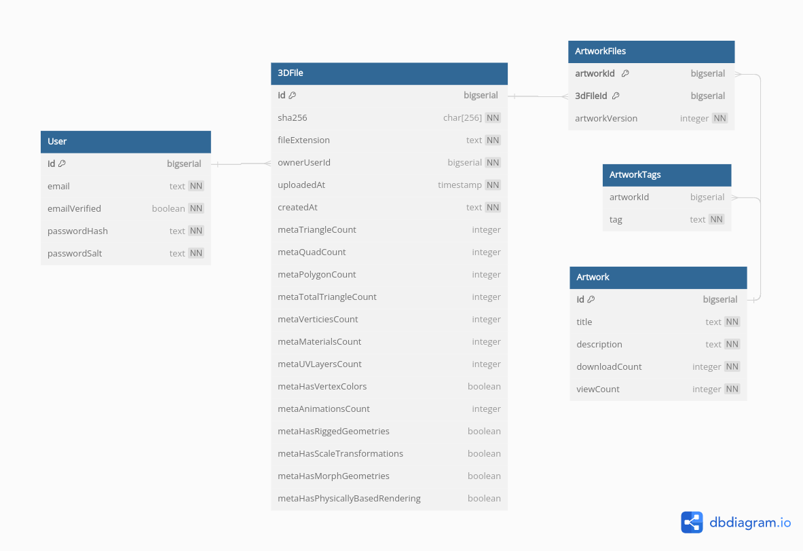

Database Tables
These documents reflect the tables early in the design stage and may not be up to date. Use as reference only.

DBML
The following is a DBML description of the database, Create a diagram at https://dbdiagram.io/ to view it.
// Display: https://dbdiagram.io/
// Docs: https://dbml.dbdiagram.io/docs/
// This table tracks individual users
Table User {
id bigserial [pk]
email text [not null, unique]
emailVerified boolean [not null, default: false]
passwordHash text [not null]
passwordSalt text [not null, unique]
}
Table 3DFile {
id bigserial [pk]
sha256 char(64) [not null, unique] // Hash of the whole file. Can be translated into a URI.
fileExtension text [not null] // Used to select the three.js loader
ownerUserId bigserial [not null, ref: > User.id]
uploadedAt timestamp [not null]
createdAt timestamp
metaTriangleCount integer
metaQuadCount integer
metaPolygonCount integer
metaTotalTriangleCount integer
metaVerticesCount integer
metaMaterialsCount integer
metaUVLayersCount integer
metaHasVertexColors boolean
metaAnimationsCount integer
metaHasRiggedGeometries boolean
metaHasScaleTransformations boolean
metaHasMorphGeometries boolean
metaHasPhysicallyBasedRendering boolean
}
Table Artwork {
id bigserial [pk]
title text [not null]
description text [not null]
downloadCount integer [not null, default: 0]
viewCount integer [not null, default: 0]
}
Table ArtworkFiles {
artworkId bigserial [ref: > Artwork.id]
3dFileId bigserial [ref: > 3DFile.id]
artworkVersion integer [not null]
indexes {
(artworkId, 3dFileId) [pk]
}
}
Table ArtworkTags {
artworkId bigserial [ref: > Artwork.id]
tag text [not null]
}